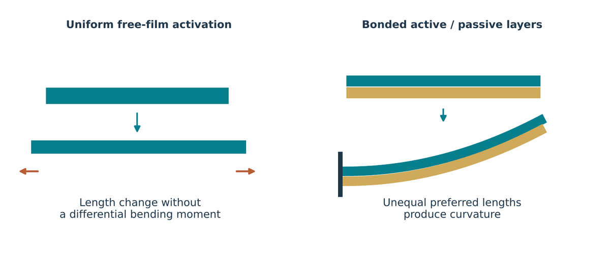

1 · The material
How a thin film bends.
An electroactive film stretches when a voltage is applied. Bond it to a passive layer and it curves instead. I measured how these polymers respond, which gave me the parameters for every model that came after.